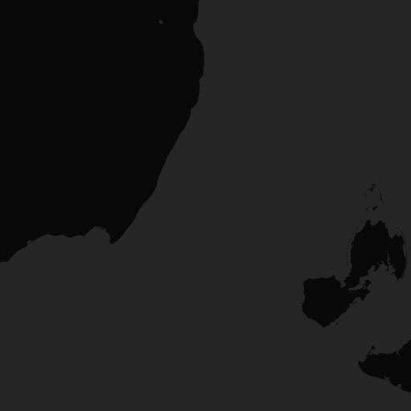
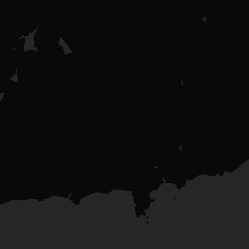

SafeHer AI Dashboard
Good afternoon, Guest User 👋
Your AI safety shield is active and monitoring 24/7
Safety Status
Protected
Voice AI
Ready
GPS
Tracking
SOS Triggers
3 Active
Emergency SOS
Tap to activate SOS
Hold 1.5s to instantly alert emergency contacts & services
Safety Features
Voice AI Detector
Real-time keyword detection · en-IN + Hinglish
Click Start to activate microphone
Voice monitoring is OFF — click below to activate
Monitored keywords
Live Telemetry
Quick Actions
Activity Log
Safety Map
🛰️ Live GPS active
Area Score
Safe Zone


.png)
.png)

.png)
.png)
.png)
Nearby Safe Places
Click to view on mapQuick Safety Tips
Keep your phone above 30% charge at all times when travelling alone.
Walk in well-lit, crowded areas — avoid shortcuts through isolated lanes.
Inform someone of your route and expected arrival time before leaving.
Trust your gut — if something feels wrong, leave the area immediately.
Always identify exits and nearby safe zones when entering unfamiliar places.
Use the Fake Call feature to safely exit uncomfortable situations.
Smart Hidden SOS Triggers
Discrete emergency activation — no one will notice
All triggers start a 5-second countdown before sending SOS — giving you time to cancel false alarms. Keyboard shortcuts work when the browser tab is active.
AI Guardian Mode
Continuous threat monitoring
Fake Call Escape
Simulate an incoming call to exit unsafe situations
Incoming from
📱 Simulates a realistic incoming call with ringtone
📴 Offline Emergency System
Works without internet. Stores data encrypted on device.
Emergency Timeline
50 events recorded